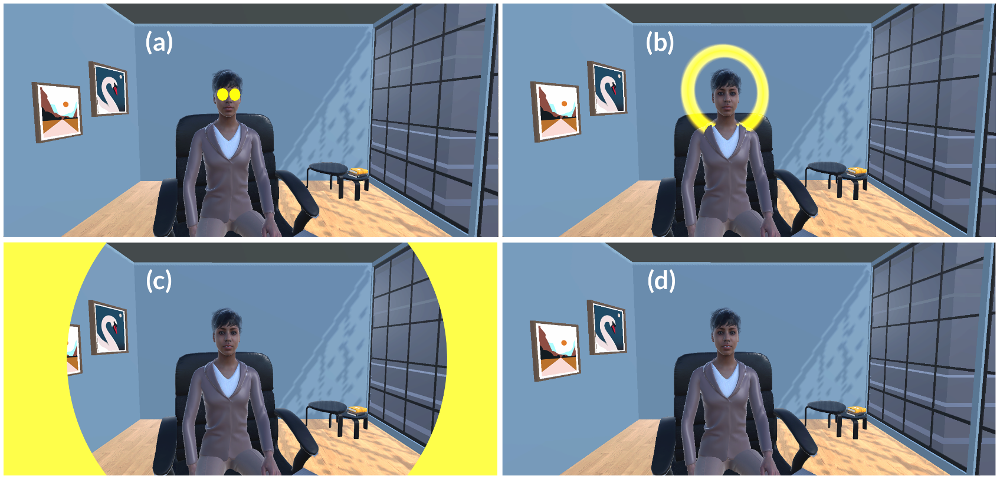
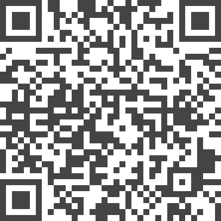

Making Eye Contact Accessible: Augmenting Gaze in Job Interviews for People with Visual Impairments
(opens in new tab)
Venue. AHs (2026)
Materials.
DOI(opens in new tab)
PDF(opens in new tab)
Abstract. Job interviews rely heavily on nonverbal communication, with gaze serving as a central signal of attentiveness and competence. For people with visual impairments, this creates an asymmetry that disadvantages them: they are expected to demonstrate eye contact but cannot access or reciprocate the gaze cues that structure interaction. To investigate these challenges in a high-stakes context, we conducted interviews with eight people with visual impairments, revealing how inaccessible gaze produces uncertainty, social pressure, and reliance on compensatory strategies. Based on these insights, we designed three visual cues, EYES, HALO, and FRAME, and evaluated them in a simulated job interview in virtual reality with 12 people with visual impairments. Our fndings show that spatially anchored cues around the interviewer’s face supported head alignment and improved perception of attentional focus, while peripheral cues were distracting. The study highlights the need for gaze cues that strike a balance between perceptual accessibility and social appropriateness in professional settings.
Link to this page:
